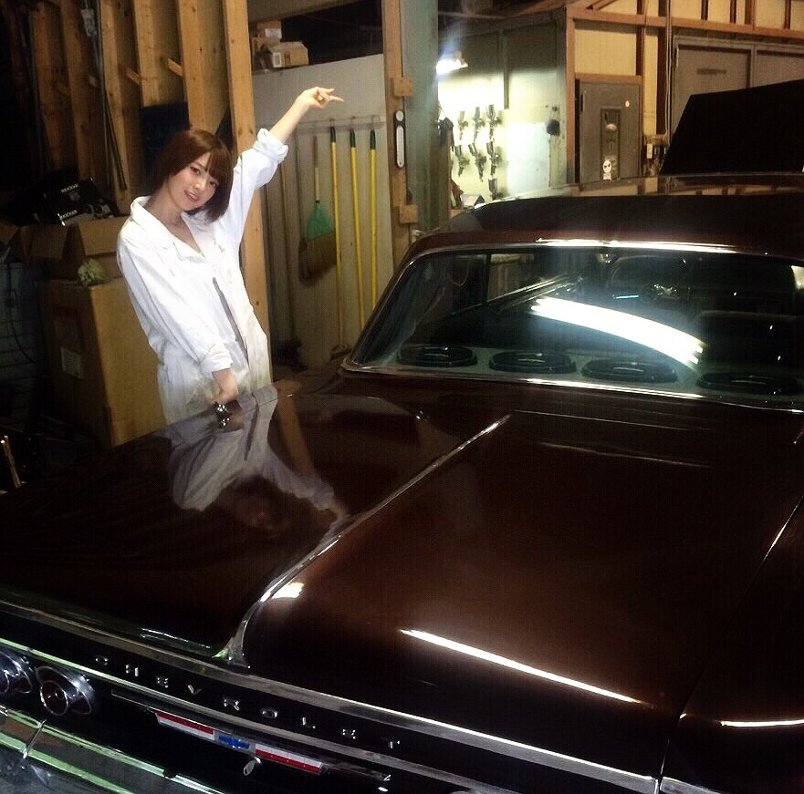
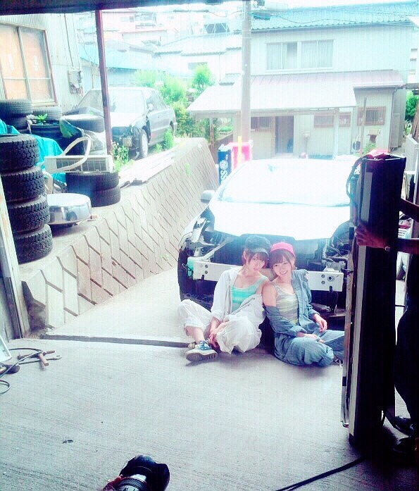
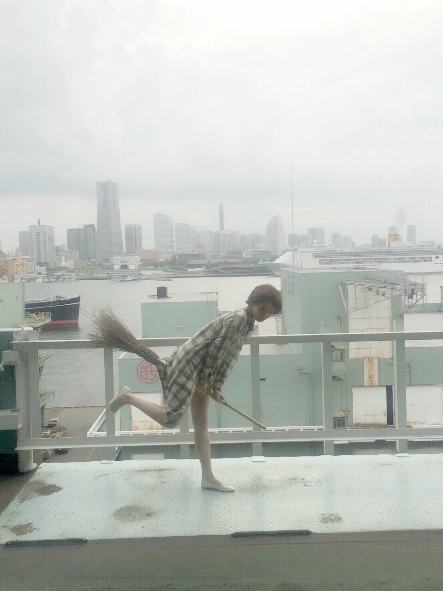
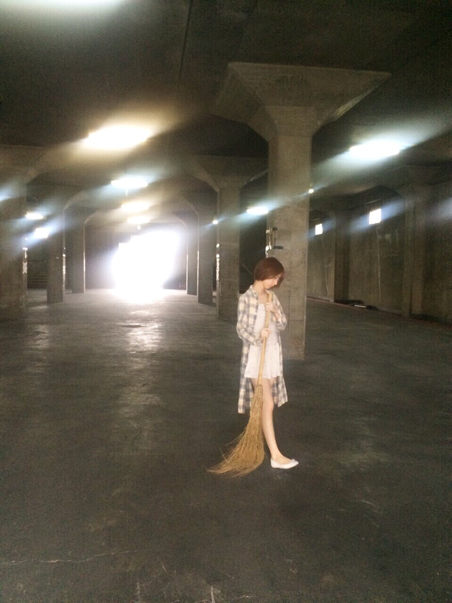

| 2015/06 29 Mon | 夏はイイね |
今日はMJの公開収録でしたー！
みんな、放送お楽しみに*\(^o^)/*
今日はいろんな人に会ったのー！
この前、SOLのセカオワLOCKS！のラジオドラマ企画にゲスト出演させてもらったので、
SEKAI NO OWARIさんにお礼とご挨拶しに行きました！
音楽番組で一緒になったりすることは多かったんだけど、バタバタしていてきちんとご挨拶したことがなかったので
今日お会いできて良かった(o^^o)
みなさんとても優しかった、、、！！！
今日のことは今度のガールズロックスで話そう(((o(*ﾟ▽ﾟ*)o)))
そしてね！久しぶりにお兄ちゃんと会ったの！！！見て！！！

リッキーと清子さんだよーーーーー(((o(*ﾟ▽ﾟ*)o)))
２年ぶりに再会しました！笑
なんのこっちゃ分からない方へ、、、
OKAMOTO'Sのオカモトショウさんとは
2013年のフジテレビのドラマ、SUMMER NUDEで
兄妹役として共演させて頂いていたんですヾ(｡･ω･｡)
お互い本業として現場でお会いするのは初でした！笑
OKAMOTO'Sさんのリハを観てたんだけど、やっぱりカッコイイ！同年代とは思えない！!
是非みんなもＯＡお楽しみに*\(^o^)/*
そして！今日発売のスピリッツで
まいやんとペアグラビア！表紙にいますヾ(｡･ω･｡)
ぜひみてね！工場の女になってるぜ！
オフショット～～～



着陸！

お掃除
たまたまわたしの好きなタイプのほうきがあったからずーっとはしゃいでた笑
あ！そうそう！
今月発売したOVERTUREでもかなりカッコイイグラビアを撮ってもらったよ！
今までにない感じのやつ！！！！

見てね(((o(*ﾟ▽ﾟ*)o)))
コメント(638)
2015/06/29 22:48